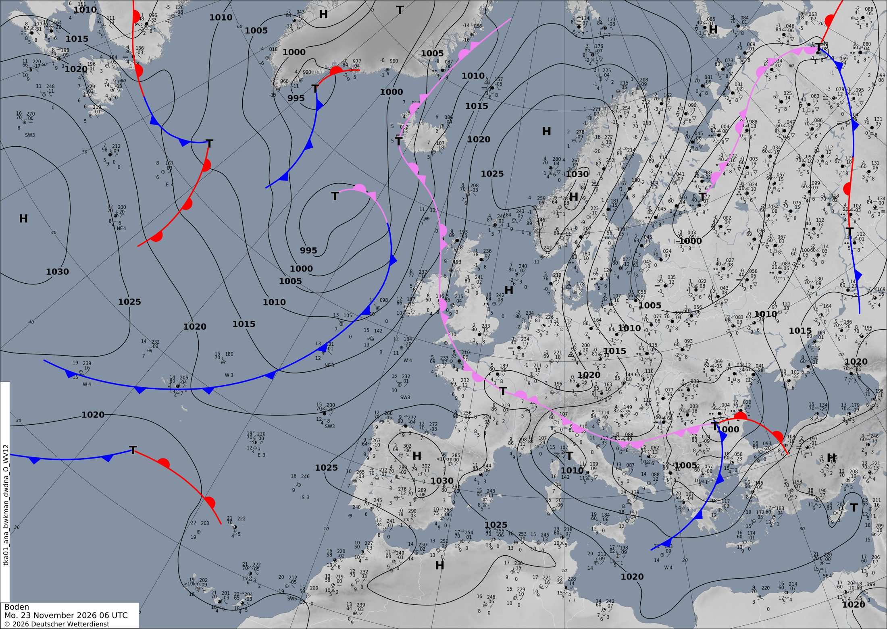

Una vaguada atlántica rompe la calma anticiclónica en la Península y Francia
Hoy un anticiclón protege la Península mientras una borrasca espera al oeste de Irlanda. Entre mañana y el miércoles su vaguada baja hacia Galicia y Bretaña, trae lluvia y viento, y deja aire más frío detrás.
Europa y el Atlántico
Hoy lunes, Europa está partida en dos. En el suroeste manda un anticiclón de unos 1030 hPa centrado sobre Asturias y Castilla y León: aire que baja despacio y cielos despejados. Al noreste está el frío. En el mapa de 500 hPa se ve una bolsa muy fría sobre los países bálticos y Moscú, con valores de unos 519–520 dam.
La carta del DWD de las 06 UTC dibuja un largo frente ocluido que baja desde Islandia, roza Irlanda, cruza Francia y llega hasta los Balcanes. Es la costura entre el aire frío del continente y el aire templado del Atlántico. Pegada a él hay una borrasca débil sobre Normandía, de 1012 hPa.
El protagonista de la semana está en el Atlántico. Al oeste de Irlanda hay una borrasca de 991 hPa con su propio núcleo frío en altura (523 dam). En el satélite se ve como una espiral de nubes blancas. Al norte, otro anticiclón de 1035 hPa se asienta sobre Escandinavia y le cierra el paso. Por eso el aire frío no puede seguir hacia el este por el norte y se cuela hacia el sur.
- Mañana martes, la vaguada se estira como una U hasta la latitud de Portugal. Delante, una banda de nubes y lluvia de miles de kilómetros va de Islandia al norte de Madeira, con hasta 51 mm en 12 h sobre el mar. Mira aquí la U en altura.
- El miércoles, la vaguada llega al noroeste de Galicia (547 dam) y en superficie nace una borrasca de 1000 hPa sobre Bretaña, con lluvias fuertes al noroeste de la península bretona (hasta 48 mm). Aparece otra baja más floja en el golfo de León. Fíjate en las isobaras y la lluvia.
- En la madrugada del jueves, todo se desplaza al Mediterráneo: hay borrascas sobre el sur de Francia y al sureste de los Alpes, y lluvias intensas cerca de Roma (61 mm) y frente a los Balcanes (80 mm).
Mientras tanto, la corriente en chorro se acelera al este de Terranova, hasta 308 km/h, y prepara la siguiente borrasca. A 72 h los detalles todavía pueden cambiar bastante.
En península ibérica y Baleares
Hoy lunes la Península está bajo el anticiclón. Con el cielo despejado y el viento en calma, el suelo pierde calor por la noche. A medianoche había hasta −2,2 °C en algunos puntos del interior, y al mediodía se pueden alcanzar 24 °C en el sur. Es la típica inversión térmica de otoño: el aire más frío se queda en los valles y en la meseta. Apenas cae algo de lluvia débil en algún punto (como mucho 7 mm).
Mañana martes el anticiclón se retira hacia Marruecos y la vaguada atlántica se acerca. Delante de ella entra aire del suroeste, templado y húmedo. Al mediodía puede haber hasta 26,7 °C en el sur. Por el oeste llega la lluvia, primero a Galicia y al Cantábrico, con hasta 26 mm entre las 00 y las 12 UTC. La CAPE sube hasta unos 600 J/kg: no es mucho, pero basta para alguna tormenta suelta.
El miércoles es el día más movido. Entre las 00 y las 12 UTC pueden caer hasta 46 mm en 12 h y hay rachas de hasta 70 km/h. La baja del golfo de León puede extender la lluvia hacia el noreste y Baleares. Mira dónde cae la lluvia.
En la madrugada del jueves ya ha pasado la vaguada y llega el aire frío de detrás. La temperatura media a 850 hPa baja de 8,4 °C el martes a 2,9 °C: se nota el cambio de masa de aire. Todavía puede caer lluvia, hasta 29 mm en 12 h.
En Francia
Hoy lunes el frente ocluido de la carta del DWD cruza Francia. Entre las 00 y las 12 UTC deja hasta 25 mm en algunas zonas. A medianoche hubo rachas de hasta 77 km/h en puntos expuestos, que luego amainan.
Mañana martes se forma un anticiclón de 1029 hPa al norte de los Alpes. Bajo él, la noche es despejada y en calma, así que el frío se acumula en las montañas y los valles. En los Alpes, la temperatura a medianoche puede bajar hasta −18,6 °C.
El miércoles la borrasca de Bretaña (1000 hPa) se encarga del oeste, y la del golfo de León del sur. Entre las dos, el aire del mar sube contra el relieve y la lluvia se dispara: hasta 67 mm en 12 h entre las 00 y las 12 UTC, probablemente en el sur, donde el relieve fuerza al aire a subir. El viento llega a 70 km/h. Mira las dos bajas. El jueves llega aire más frío, con una media de 0,4 °C a 850 hPa.
París y alrededores. Hoy lunes hay entre 5,8 y 8,3 °C a medianoche y entre 5,5 y 6,3 °C a mediodía. Caen hasta 4,3 mm por la mañana y el viento sopla a 21 km/h de madrugada, luego a unos 10 km/h. El martes, a medianoche, la temperatura queda entre −1,4 y 1,4 °C (puede helar), y entre 4,7 y 5,7 °C a mediodía. Es un día seco y con poco viento (10–11 km/h). El miércoles, entre 4,0 y 4,8 °C a medianoche y entre 4,6 y 6,9 °C a mediodía. Llueve poco: 0,5 mm de madrugada, 1,7 mm por la mañana y hasta 2,9 mm por la tarde-noche. El viento sopla a 12–13 km/h. El jueves a medianoche vuelve a bajar a entre −0,4 y 0,9 °C.
Lección del día: El mapa de 500 hPa
Hoy aprendes a seguir el frío en el mapa de 500 hPa. Cada línea une puntos donde la superficie de 500 hPa está a la misma altura. Si los valores son bajos, la columna de aire es fría.
- Abre el mapa de altura de hoy. Sobre la Península las líneas marcan unos 568–576 dam y los colores son cálidos. El aire templado acompaña al anticiclón.
- Pasa al paso +24. Al oeste de Portugal, las líneas se doblan hacia el sur en forma de U. Es la vaguada, que mete aire frío hacia latitudes bajas.
- Pasa al paso +48. La U llega al noroeste de Galicia (547 dam) y, cerca de Bretaña, una línea casi se cierra en círculo. Activa la capa
msl: justo debajo está la borrasca de 1000 hPa. - Compara con +72: la U ya está sobre Provenza y los colores azules cubren el norte peninsular.
Regla para llevarte: cuando una U de líneas bajas se acerca, primero llegan la lluvia y el viento, y después el frío.
Ponte a prueba
3 preguntas sobre el tiempo de hoy. Puedes mirar el mapa antes de contestar.
¿Por qué hoy lunes casi no llueve en la Península y por la noche hace tanto frío en el interior?
Hay un anticiclón de unos 1030 hPa sobre Asturias y Castilla y León: el aire que baja despeja el cielo y, sin nubes, el suelo se enfría mucho por la noche. Mira aquí.
El miércoles las líneas de 500 hPa forman una U que llega a Galicia y casi se cierran cerca de Bretaña. ¿Qué nos dice eso?
¿Por qué la noche del lunes al martes es mucho más fría en París que la anterior?
El martes a medianoche hay un anticiclón de 1029 hPa al norte de los Alpes. Con el cielo despejado y el viento a unos 10 km/h, París baja a entre −1,4 y 1,4 °C. Mira aquí.
La carta oficial
Análisis de superficie del servicio meteorológico alemán (DWD) válido el 23/11/2026 a las 06 UTC, dibujado por meteorólogos a partir de observaciones. Aquí sí hay frentes: azul con triángulos, frío; rojo con semicírculos, cálido; morado, ocluido. Las borrascas son T y los anticiclones H. Cómo leer esta carta.
